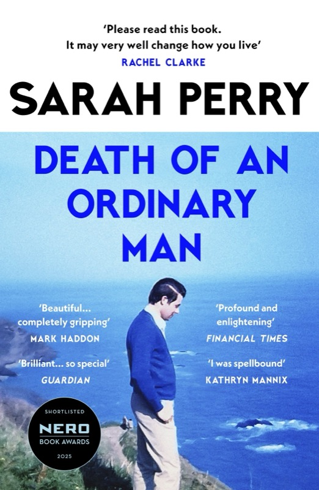

“This writing has to do with some things I saw, felt, & was part of.”DAVID JONES · IN PARENTHESIS
SARAH PERRY
DEATH OF AN ORDINARY MAN
He lived for seventy-seven years, and he died for forty-eight days

In autumn 2022 Sarah Perry's father-in-law, David Perry, a retired industrial chemist, stamp collector and Baptist, ate four doughnuts on Yarmouth seafront and laughed through the summer circus. Seven weeks later he was dead of oesophageal cancer. He died at home in his Norwich bungalow nine days after the diagnosis, cared for by Sarah and her husband Robert, his only son. The novelist (The Essex Serpent, Enlightenment) records those days hour by hour: the GP with the ReSPECT form, the commode, the morphine hunted down at five pharmacies, a last hymn sung with both arms raised. Alongside them she sets Shakespeare, Tagore, R. S. Thomas, Galileo and the medieval Art of Dying. She says what nobody had told them: dying has a shape, it can be learned, and it belongs to life.
Jonathan Cape, 2025 (Vintage paperback) · Three parts: Life, Death, Afterlife · ~54,000 words · Dedication: “For Rob” · Shortlisted, Nero Book Awards 2025 · Her first full-length non-fiction
77years lived. Born in London at the end of the Second World War, died in his own home, like Galileo, at the same age.
48days of dying, counted from the afternoon Sarah “saw death” in Norwich market square.
9days from the consultant's “palliative care” to 3 a.m. on 23 November 2022.
Part one
Life
Yarmouth, the end of summer, and the particulars of one irreplaceable man.
Yarmouth seafront
Doughnuts and a flooding stage
The book opens at the end of summer. David waits at a doughnut stand on Great Yarmouth seafront with his son Robert, watching a woman dressed as a fairy do tricks. Sarah, sulking on the shore the way she always does after finishing a novel, brings over a scalding paper bag. David eats four: “Excellent. That was excellent.” Then the three of them go to the Hippodrome circus, where in the interval the stage sinks and fills with water. David laughs his private chuckle, Heh! Heh! Heh!, until the shabby velvet seat shakes.
Robert remembers sitting in the front row as a boy because of his mother Jenny's wheelchair. Sarah watches the dusk turn the sea “like a bolt of dull grey cloth” and doesn't think to tell David to look, “that really he ought to remember it for the rest of his life, which is to say for a little less than two months.”
Sonnet 65 above a civil-service desk
As a young civil servant in a windowless basement off the Strand, Perry pinned poems above her desk. One was Shakespeare's Sonnet 65, which mourns that nothing survives the “wrackful siege of batt'ring days”, unless
O, none, unless this miracle have might,
That in black ink my love may still shine bright.Shakespeare, Sonnet 65
Back then she thought a writer needed a grand loss to write about: a dying child, or a friend loved the way Tennyson loved his Hallam. Now she thinks the opposite:
But now I understand there are no ordinary lives – that every death is the end of a single event in time's history: an event so improbable it represents a miracle, and irreplaceable in every particular.Part One
The particulars
So she counts them out. Weak Yorkshire tea in footed mugs printed with blue flowers, sweetened with tablets he called “depth charges”. Disliked dogs, could calm a feral cat. Sugar-free mints thumbed from the tube without looking. Tough green beans frozen for Christmas. Couldn't stand broccoli. Mahalia Jackson, American Graffiti, the Antiques Gazette, Commonwealth stamps, sudoku, deerskin slippers too precious to wear. Handmade shoes under polyester trousers. Glasses always smeared.
The life
Born in summer at the end of the war; four brothers in a dank rented flat in London, a grandfather who drank tea from the saucer and set fire to the chimney to save a shilling on the sweep. Moved to Basildon at ten. Industrial chemist at May & Baker; commuted on the Fenchurch Street line; cared for Jenny, disabled by rheumatoid arthritis, for their whole marriage. Moved to a Norwich bungalow in the pandemic.
The man
Shy, silly, sometimes sharp. Lay preacher at a Baptist chapel near Norwich station. Would argue you into the ground about politics and assisted dying (“Absolutely not … we should never have that”). Once drained the milk jug every breakfast at a Yarmouth hotel run by a Mr and Mrs Christmas, until on the last day it overflowed and he drank it by the glass, laughing about it for months.
Every summer he set his deckchair “three feet from the boundary of the sea and never crossed it.” He couldn't swim. That night after the circus he ticks YARMOUTH CIRCUS on the kitchen calendar, fumbles a packet of porridge and scatters oats over the counter, and decides to clear it up in the morning. “He had plenty of time.”
Overview
The 48 days
The book is written almost in real time, and in places in the present tense (“It is four days until he will die”). Here is the sequence:
Late summer
Yarmouth. Doughnuts, the Hippodrome circus. Oats spilled on the counter. Black cross-hatchings begin appearing on his calendar.
~3 weeks later · Day 1
Jarrolds, Norwich. David arrives late for Robert's birthday tea, lurching and putty-grey. Sarah knows “with the cool and perfect certainty of arithmetic” that he is dying. He cuts sandwiches into smaller and smaller pieces and leaves them.
That week
GP: “long Covid”. Robert insists on a blood test; the receptionist offers three weeks, Robert asks about the walk-in centre. Sarah's oncologist friend Sam texts back: “My concern would be oesophageal cancer.”
The following weeks
A brief rally, then David stops eating. Sarah calculates his calories on an NHS envelope; Robert keeps notes on his phone: “Bus milk bus milk bus milk.”
Endoscopy
No sedation (“didn't want to be messed about with”). “It does look like cancer.” He writes his passwords and his mother's maiden name on the calendar's last page. The Two-Week Wait begins.
Mon 14 Nov
The consultant. David can't walk from the hospital entrance; a receptionist mouths “Wheelchair?” Metastases in bones and brain. A stent on Friday. “Our priority now, Mr Perry, is to keep you safe.” He insists on going home.
Tue 15 Nov
Sarah finds him curled in bed holding the Antiques Gazette, the carpet stained. She calls him “Dad” for the first time. Evening: the GP and the ReSPECT form: comfort first, die at home, no CPR. “I'm going on holiday tomorrow.”
Wed 16 Nov
Community nurse; the WHO TO CALL? leaflet; an approved walking frame and a commode pushed into a corner. Pastor Luther prays.
Thu 17 Nov
Incontinence, and the “line of women”. He is fast-tracked to end-stage care: hospital bed in the living room facing the garden, hospice carers twice a day. Sam at night: “He isn't dying because he is starving.”
Fri 18 Nov
At 9:30 exactly Sarah calls the ward. The senior nurse: “This is on me, and not you.” No stent. False teeth removed. In the night he cries “No! No! … Why?”
Sat 19 Nov
Laughing at Three Men in a Boat; half an hour later the pain begins. Morphine from the fifth pharmacy. Emmanuel the night carer. The opera coat.
Sun 20 Nov
Sarah's parents arrive. A last service in the bungalow: “Encouraging!” He sings “Great Is Thy Faithfulness” with both arms raised. Then terminal agitation, and a late-night supermarket pharmacy.
Mon 21 Nov
Rock 'n' roll on the speaker. Cheyne–Stokes breathing, the death rattle, Buscopan, Eccles cakes.
Tue 22 Nov
Syringe driver (“changing your print cartridge, Dad”). Parents leave. Sarah's wordless prayer with raised arms.
Wed 23 Nov · 3 a.m.
Emmanuel knocks: “David has died. He is dead.” Orion over the bungalow, Mars behind the almond tree.
The weekdays are worked out from the book: it gives 15 and 16 November 2022 as the first night and morning after the diagnosis, and the Friday stent date, Sunday service and Tuesday last day fit those dates.
Part two
Death
“Death has a duration and an amplitude, with events as various and strange as those of a life.”
Jarrolds, Norwich market square
“He is a dead man walking”
The family always met at the prow of Jarrolds department store. On the day of Robert's birthday tea, David is ten minutes late. Then he comes out of the crowd a hundred yards off, his walk tilting “as if the pavements were bucking and trying to throw him off”, his skin “the thick, dull look of putty”. Perry, raised on maths, physics and “the brute logic of Calvinism”, says she has never had second sight. But:
I knew immediately, and with the cool and perfect certainty of arithmetic, that he was more or less a dead man.Part Two
She looks at Robert: “Oh, Robert. My love –” / “Yes. Yes, I see. I know.” This is where she dates the start of his dying:
Now I understand that death has a duration and an amplitude, with events as various and strange as those of a life. … he lived for seventy-seven years, and he died for forty-eight days.Part Two
At tea, David keeps saying he got “in a bit of a muddle”, which turns into his only word for what is happening to him. They leave him at the bus stop in the dark. Saying he couldn't get home alone “would have been like deposing our head of state, when we could never elect another.”
Getting a blood test
A young GP, who perhaps had been taught that hooves mean horses, not zebras, suggests long Covid. Robert, “a man who'd never insisted on anything for himself”, asks for a blood test. The receptionist offers a slot in three weeks, and only mentions the walk-in centre when Robert asks. Sarah texts Sam, a writer and oncologist, from an underpass: “My concern would be oesophageal cancer.”
Refusing food
David stops eating, and Sarah gets exasperated: a man who can eat a biscuit on Tuesday can eat toast on Wednesday. She learns only later that refusing food is common and unremarkable near the end. Elizabeth I lay on cushions and “all about her could not persuade her, either to take any sustenance, or to go to bed.” Sarah works out his daily calories on a tea-stained NHS envelope and cooks lentil soup and mash “made nauseatingly rich with a pint of whole milk”. Months later she finds out that Robert ate every portion himself after his father died, “unable to see an act of love be wasted.”
Robert's notes Robert secretly kept notes on his phone. Sarah only read them two years later, while writing this book. Sometimes, she says, they “take on the fractured look of bad verse”: Tiredness and calories. / No joy here. / Bus milk bus milk bus milk bus milk bus milk bus milk.
The endoscopy and the doors
He refuses sedation. In the waiting room afterwards he imagines the walls lined with doors: one leading to a short course of antibiotics, one to “nerves”, and one, “seeming no different from the others”, to years of being messed about with. A breezy doctor names it “as if identifying a common bird”: “it does look like cancer.” David thinks of Isaiah:
For I the Lord thy God will hold thy right hand, saying unto thee, Fear not; I will help thee.Isaiah 41:13 (KJV), handed down “through Wycliffe and Tyndale”
That night he takes down the birthday calendar and writes on its last page his bank passwords, his insurance and utility providers, and in capitals his mother's maiden name.
Two-week wait
The NHS calls the gap between a suspected cancer and seeing a specialist the “Two-Week Wait”. Perry first met “2WW” fifteen years earlier on fertility forums, when she suddenly wanted a child, conceived what would have been David's only grandchild, and lost it. Now the phrase means both things: “fourteen days until signs of life … fourteen days until signs of death.”
… what had changed wasn't the land, but the view.Part Two
Friends come to help: Jude, practical and calm; Harry, who once taught her piano; the friends from Chester with their twice-yearly board games; a chapel WhatsApp group called “How Can We Help David?”. Her father warns: “I'm afraid you'll both get very ground down.” She makes a spreadsheet. As it turned out, nobody had time to get ground down.
Monday 14 November
“Palliative care … to keep you safe”
Robert has started a new job, so Sarah goes with David to the consultant, dressed in black silk and white linen “because … even doctors find it difficult to condescend to a woman who resembles a wealthy abbess.” Luther, David's pastor, whom she last saw as a child in a remote Suffolk chapel, drives him there. David can barely walk. Getting from the car to the entrance seems to take an hour, until a receptionist mouths “Wheelchair?” through the glass doors.
A grave, kind consultant pushes the wheelchair himself. There is a growth, and “changes” in the bones and brain. A stent might help him eat. Then: “What we are talking about now, you see, is palliative care. Our priority now, Mr Perry, is to keep you safe.” Sarah notices “that he'd been unable to promise David's comfort, only his safety.” No doctor ever says “tumour” or “metastasis”. Gillian Rose, dying of ovarian cancer at 48, wrote:
For you, “cancer” means, on the one hand, a lump, a species of discrete matter with multiplying properties, on the other hand, a judgement, a species of ineluctable condemnation.Gillian Rose, Love's Work
The plainest talk came nine days later from the undertaker, over tea at the kitchen table. In a young woman he had known, the tumour and the oesophagus “grew around each other like the double helix in a strand of DNA.” Of David, now lying in the next room with a small olive-wood cross on his blanket: “It might not have been better for you, but it was better for him.”
Red wine, a dog's head on his knee
Back at Sarah and Robert's house David rallies: tea resting on his stomach, Janey the whippet's head on his knee, no self-pity. Perry quotes the atheist Christopher Hitchens, who had the same cancer:
To the dumb question “why me?” the cosmos barely bothers to return the reply: why not?Christopher Hitchens, Mortality
What he said “You know you're going to die eventually. But I didn't think it would be so soon.” / “Then again,” Sarah said, “you might be hit by a car next week, or I might.” / “Heh! Heh! That's true!” Then: “You needn't worry about money … there's more than enough.” She jokes about a robot butler. He doesn't laugh, because he hadn't meant that: I'm not talking about what I need. I'm talking about what I leave behind.
David-ness
Months later, on a walk, Robert tells her about Plato and Diogenes arguing over the “cup-ness of a cup”: “I can see this cup … But where, I ask you, is the cup-ness?” Perry decides David kept his “David-ness” to the end. So did Jenny, who ten years earlier sent them home from her hospital bed and, unable to lift her arthritic hands, blew kisses with “quick sideways turns of her head, hurling kisses from her mouth towards us.” She died that night.
At home that night David lies down beside the jungle wallpaper with its parrots, thinking that “fear not” occurs 365 times in scripture, “once for each day of the year, which was either a coincidence or a marvellous piece of design.” He reaches for the Antiques Gazette.
Tuesday 15 November
The hatch in the floor
Sally, the friend with the shaved head Sarah met at a Yorkshire wedding and knew at once she would grow old with, drives her to the bungalow. The silence inside “had weight and matter.” Sarah's heart starts knocking: little pig, little pig, let me come in! David is curled on his left side, shirt ridden up, clutching the rolled Antiques Gazette “like a child consoling himself with a favourite toy”, and there is urine on the carpet. Without deciding to, she calls him “Dad”, something she had refused for twenty-two years “because this would outrage my attachment to truth.”
The door to his bedroom had not been set in a wall perpendicular to the floor, it had been an open hatch at my feet: I was falling now after David who'd been falling for some time, and soon Robert would be falling with us.Part Two
She runs out and bangs on Sally's car window, needing a witness to prove she isn't inventing “a tall tale in which I was a seer.” “I'm being a bit of a bother,” David says. When they protest, he says: “Well it is a bit.” Sally (“she was Julian of Norwich, and all manner of things would be well”) tells her to call the GP. At David's pine kitchen table, its varnish worn through by his elbows, Perry thinks of Lucretius: everything is made of atoms that wear away and move from thing to thing, so the table still holds particles of birthday cake, Avon perfume and Robert's homework ink.
Anger, and the NHS as a state religion
A friend once told her she had never let herself feel angry. “No,” she replied, “because isn't anger a sin?” She was raised to be, like the Psalmist's God, “slow to anger and plenteous in mercy”. But she can't think about that evening without “staining the fabric of my soul.” She had clapped for the NHS until her palms bruised: “What is the British state religion, secularists that we are, but the NHS?”
The ReSPECT form
The GP comes at dusk, brisk and exasperated (“This just keeps on happening”), carrying a folder of a “translucent urine yellow”. She has a mauve form: the Recommended Summary Plan for Emergency Care and Treatment, the “e” set inside a heart, printed with “Microsoft Word version 3.5”. She asks the questions and waits through the silences. David looks only at Sarah, and she ends up translating:
Long life, or comfort?
“Oh no … I don't want to be messed about with.” → Prioritise Comfort.
Where?
“No, I want to stay here, I want to stay at home.”
Resuscitation?
“No, no … no, I won't be messed about with!” → “Right, so that's DNR!” CPR attempts NOT recommended.
Sarah's fear
“I've often been afraid that I influenced him in some way with my mediation.”
At the door: “Well, I must be getting on. I'm going on holiday tomorrow, and do you know: I haven't even packed?” Stupid callous cruel woman, Sarah thinks. Then the other half of her thinks it through:
And it occurs to me now that perhaps she was really calloused, as I've so often said, since a callus will form in soft places that have too often been rubbed sore.Part Two
The photo in the cabinet; the gate
In the glass cabinet there is a photobooth picture of the young couple. Jenny lost her red-haired mother at eight and grew up refusing to look back: “Oh just get rid of it, we don't need that old thing.” David rarely mentioned her, or God. Perry turns to Austen's Mr Knightley: “If I loved you less, I might be able to talk about it more.” On the train home after Jenny died, Robert had asked, “You're going to write about this, aren't you?” “Yes.” “Good. You should.” Perry admits she was watching David “with the assessing acquisitive eye of a magpie”, and quotes the rabbi Delphine Horvilleur:
The role of the storyteller is to stand by the gate to ensure it stays open.Delphine Horvilleur, Living with Our Dead
Robert comes back with a bin bag of clothes and a quilt, and they make a bed on the floor among the stamp boxes. Sarah's eldest sister, an end-of-life carer, asks four questions on the phone: can he breathe, is he in pain, does he eat and drink, has he asked you never to leave him? “He's all right for now, Sarah. Try not to worry. And get some sleep.” In the night Robert finds Jenny's chunky-handled fork in the kitchen drawer. His father had kept that one old thing.
Wednesday 16 – Thursday 17 November
Falling, and the line of women
David wakes with the dogs lying at his feet “like the marble hounds sleeping at the feet of the lovers holding hands on the Arundel Tomb.” A community nurse arrives. Here Perry, “that's novelists all over”, writes out everyone's thoughts in turn. The nurse's: nice family … next appointment in ten minutes. Robert's: my father is dying? My father is going to die? Her own: I do wish I could go home. She is given a leaflet that says WHO TO CALL? under a red rotary phone. Over the next week it becomes an icon to her, “as if I were a failed saint and it had been an icon in a gilded frame.”
Galileo's brass ball
Galileo rolled a brass ball down a vellum-lined groove and proved that every falling object accelerates. He also died at seventy-seven, at home, under house arrest, with no appetite and complaining: “I cannot keep my restless brain from grinding on.” Perry should have remembered that: “if we were falling … we could never have been arrested in motion.”
A hand on her shoulder
On Thursday morning David stands at the bathroom door, looks down and says “Oh, I've got in a muddle”, as urine pours out of him “as if from an upturned jug.” What follows embarrasses Perry, and she tells it anyway, “since I suppose truth is more valuable to me than reputation”:
… a woman was standing behind me with her hand on my right shoulder … and that she, too, felt a hand on her right shoulder, and that this chain went on and on, back through preceding generations of women who'd stood in bungalows like these … and prepared themselves for the death watch.Part Two
She is a feminist who has “never wanted to dance with the sisterhood”, and she finds the experience politically indefensible. But afterwards washing him is “as instinctive and natural as helping up a child who'd fallen over,” and her bright, nannying voice is gone.
“Make haste O Community Hub”
On the phone she is told about forms and means testing (“It doesn't seem to be on the system yet”) until she breaks down, and somebody somewhere says, “oh, I see. Yes, I see.” The nurse comes back and fast-tracks David to end-stage care. Perry finds a medieval parallel. In 1917 Frances Comper translated the Ars Moriendi as The Book of the Craft of Dying:
All a city should come together with all haste to a man that is nigh death or dying … all things being left, hastily come.The Book of the Craft of Dying, tr. Frances Comper
And people did come: hospice carers (the Norfolk Hospice, mostly funded by donations), district nurses, Luther with packs of incontinence pads. They push the tapestry armchair out to the garage. The hospital bed is “an engine for dying in”, with an air mattress that sighs like shallow breathing and an alarm when unplugged “like the wail of a hired mourner.” They set it facing the winter-flowering almond and bring the red geraniums indoors. A carer from Harlesden argues with David over which of them is the real Londoner.
Thursday night – Saturday
The death watch
That night Sam phones and asks, “Is it all right if I speak to you plainly?”
He isn't dying because he is starving, he is dying because of the cancer.Sam, oncologist friend
His instruction: call the ward at exactly 9:30, ask for the senior nurse, and say he is too frail to move. The next morning David agrees: “I don't want to be messed about with, not really.” The nurse who had praised stents says: “I'm going to take this out of your hands. … There, now: this is on me, and not you.” Sarah weeps.
No rituals
There are no familiar rituals for us. We have no candles to hand, no songs passed down from our grandmothers; nobody ever said: when the time comes to keep vigil by a dying man, this is what you must do.Part Two
Other people have had rituals: the death-watch beetle ticking in old timber, taken as an omen; the Polish gromnica, a “thunder-candle” blessed in February and lit against storms and at the deathbed. Sarah and Robert split the night into shifts and quarter-hours. They cradle him because the bed has no side rail, and pile cushions on the coffee table to catch his head. They each eat their way through the Wagon Wheels he had hoarded, which become their “soul cakes”, the spiced biscuits once handed out on All Souls' Eve.
Cachexia
She sometimes weeps, believing they are starving him. In fact cancer is consuming him “like a pack of wolves”: cachexia, the body's muscle eaten fast. He is dying “because something in him resolutely lived”: cells that keep dividing and never mature into anything, “a kind of stupidly fertile and vigorous youth.”
Generous in sickness
David, who all his life had shown love only with a handshake, lets them clean him and never fends them off. Perry quotes Maggie Nelson's Bluets: “This is generous, for to be close to her pain has always felt like a privilege to me.” The carers take out his furred false teeth, and his lower lip folds in “like a pleated piece of white satin.” His skin becomes creamy and poreless and his face goes from “an English peasant” to something “mythic, all pathos and gravity.” At night the wordless shouts turn out to be words: “No! No!” … “Oh dear …” … “Why … why?”
Does love alter?
Perry has always disliked the wedding sonnet, “love is not love, which alters when it alteration finds,” which has become “as cheap as daffodils”. She thinks love should bend like a bridge in a storm. She turns to R. S. Thomas's poem “Cures” and the Cathar woman Guillemette questioned by the Inquisition:
My poor friend, my poor friend, the soul is nothing but blood.Guillemette, in R. S. Thomas, “Cures”
As his body changes, his character does too. The diffidence and irritability wear away and he becomes sweeter. Once, when she wakes him, “a light came into his eyes which I've really only ever seen before in young babies … then briefly he smiled, and after that the light receded like a coin dropped in a dark pond.” She starts calling him sweetheart, my love. When Sarah brings the wrong cream for pressure sores, a carer says, “I don't think he's going to need it.” He won't live long enough to get them.
Laughing
The Shipping Forecast at breakfast, when he sank in his chair whenever pressure was “falling”. The joke title All Smallers Great and Creach. Singing “What a load of filthy muck!” over The Archers theme. Sarah reads him the first chapter of his Folio Society Three Men in a Boat, and he laughs ahead of the lines he knows are coming. Half an hour later the pain in his back begins. It may have been there for days, which would explain why he always lay curled on his left side.
Comedy and tragedy passed through the bungalow like a troupe of players that couldn't make up its mind.Part Two
During Luther's prayer the washing machine ends its cycle by playing Schubert's Trout Quintet. Reading a card from old Essex friends who “looked forward to seeing him again”, Sarah breaks down by the bed, and at the same moment tells herself: get up, woman, get up off your knees, do you think you're in a novel? The two things keep existing side by side, “like a failure of simple maths.” For the morphine, Robert has to drive through the wet night to five pharmacies.
Robert, nearly three winters later “What I felt was that Dad wasn't either fighting or not fighting, which is the kind of language they use for cancer, which now I see is all wrong. What I saw was that he submitted. It wasn't giving up. It was something better and maybe even braver than that.” … “I knew I wouldn't stop being his son just because he'd died.” Was he afraid? “Not of death … I was afraid of being alone. He was going to die, and then I'd have no parents, no siblings, no children.”
Emmanuel and the coat
The first night carer arrives late with a rucksack and a laptop covered in stickers. Perry has always called him Emmanuel, and learned only later that his name was something else. He looks at the dying man, nods once, puts on a football match and says: “You go to bed, he's all right with me.” He has six children, so a night with David is a rest. Sarah can't sleep. She scrolls through luxury clothes and fixes on a 1920s kimono-silk opera coat, “a cathedral of a coat”, and buys it at half price in the small hours. It arrives the day after he dies. “I've learned not to say: ‘I bought this, you see, because I was watching somebody die.’”
Why is this night different?
In Jewish tradition you can rename the gravely ill to trick the Malakh ha-Mavet, the Angel of Death, “full of eyes”. At the Seder the youngest child asks why this night is different from all other nights. Perry asks whether they ever hoped death would pass over the bungalow. They didn't. By then death was “simply an event, a thing that would happen, as inevitably as midnight follows eleven o'clock.”
Sunday 20 – Wednesday 23 November
“Encouraging!”
Sarah's parents come with shepherd's pie in a clay dish. She runs barefoot down the wet drive “reduced to a child again”. David knows them, grasps their hands. It is a Sunday, and he has already had his last chapel service without knowing it was the last. So Sarah texts Luther to bring hymnbooks for a service in the bungalow. She worries she is “only telling stories to console myself”, the way they say birds circled singing over Francis of Assisi as he died after hearing the “Canticle of the Sun” (“Praised be my lord for our sister the moon, and for the stars”). “Well, perhaps; or perhaps he went to his end quite sulkily, and no birds sang.”
Still: “it was like this.” Six hymnbooks, uncomfortable kitchen chairs, dim light, pigeons on the lawn. Halfway through the sermon David opens his eyes, nods hard and says: “Encouraging, encouraging!” Then the hymn that had been playing in the room for days:
Great is thy faithfulness, oh God, my Father;
there is no shadow of turning in theeThomas Chisholm, “Great Is Thy Faithfulness” (1923)
… his voice now was powerful, and becoming more certain of itself with each verse, and his recollection of the hymn's words was exact. As he sang he took his arms out from under the covers and raised them above his head … It was both the saddest and the most triumphal thing I'd ever seen.Part Two
For the first time Sarah thinks “death wasn't something merely happening to David, but that in fact he was participating in it.” She believes the peace of the dying doesn't belong to any one faith, and turns to Tagore:
I have got my leave. Bid me farewell, my brothers!
I bow to you all and take my departure …
A summons has come and I am ready for my journey.
At this time of my parting wish me good luck, my friends! The sky is flushed with dawn and my path lies beautiful.Rabindranath Tagore, Gitanjali (Song Offerings), 93
Terminal agitation and patior
He never speaks clearly again. Right after the service he tries to climb over the rail, startlingly strong, and Sarah pushes a dying man down by the shoulders. It is still unbearable to her. The red-headed nurse calls it terminal agitation and writes a prescription, which she fills at the one supermarket pharmacy open late on a Sunday, crying. Sam once told her that “passion” and “patient” share a Latin root, patior: to suffer, to endure, to undergo, to allow. “I think he did suffer in his dying. … But he endured it, and in the end I think even permitted it, knowing that he'd got his leave.”
I dare not speak any more of hope. What one can demand is that one should have grace to exhaust all that the instant holds of good.A young French soldier to his mother, 1917, in the preface to The Book of the Craft of Dying
Monday: Eccles cakes
Robert swaps the hymns for rock 'n' roll: “It's the hearing that goes last.” Cheyne–Stokes breathing sets in: long sighs, then stillness. Robert, once a police officer, used to watch sleeping prisoners' chests rise and fall; “now, when the blanket goes still, we'll call no one.” Perry quotes Eliot's Four Quartets: “be still, and wait without hope.” Then the death rattle, “as if there are magpies chattering in his throat. … who would have thought the old man to have so much noise in him?” The nurses give Buscopan (“Buscopan, of all things!”), and the family eats Eccles cakes by lamplight to the click of her mother's knitting needles, and for a moment her mind takes it for Christmas. Her father turns away: “I can't believe David is dying. I just can't believe it.”
Tuesday: the failure that can't be repaired
David pulls her hand to his mouth. Mortified, thinking he has mistaken her for Jenny, she pulls it away, and realises too late he probably wanted a drink. “I failed him then, and it is different from every other failure of mine because it's not possible to tell him I'm sorry.” A paperwork mistake holds up the syringe driver until a GP eating a banana scribbles something in biro: “There you go! I expect that'll sort it.” As the nurse fits the grey box to his thigh, Robert says, “Looks a bit like they're changing your print cartridge, Dad,” and the nurse laughs. Her parents kiss him goodbye; for them it isn't final, “they'd see him again, and in glory.” The funeral is half-planned already: No Flowers, No Mourning, a plain pine coffin (a wicker eco-coffin is “just a giant picnic hamper”). An olive-wood cross arrives by post with no note.
Sarah's last words to him: “It's all right, my darling. It's all right, Dad. We're going to be OK – if you have to go now, we're going to be all right.” She leaves Robert to say goodnight alone. On the mattress, she prays for the first time, in the sense Iris Murdoch meant:
Prayer is properly not petition, but simply an attention to God which is a form of love.Iris Murdoch, The Sovereignty of Good
There are no words. Her arms rise by themselves, “as if I were giving him to God.” Then she feels the hubris of it, drops them and falls asleep.
3 a.m.
Emmanuel knocks: “David has died. He is dead.” “I had the sensation not that someone had departed, but that something had arrived.” His skin is still warm. Emmanuel stands with his hands clasped: “David? We love you. Rest in everlasting peace.” Then he packs his laptop and leaves.
There was relief, and there was loss – it was the saddest thing we'd ever seen, and the best thing we had ever done – all these things existing together undiminished, and never cancelling each other out. … We exhausted all that the instant held of good. We opened the curtains: we looked west. Marvellous night, no moon – Orion passing over the bungalow, Mars burning behind the winter-flowering almond tree.End of Part Two
Part three
Afterlife
The Claude glass, a funeral in a closing chapel, a dead rat, and lights going out across a city.
The Claude glass
Darker, and more beautiful
On Perry's desk is a Claude glass: a convex black mirror that 18th-century tourists held up with their backs to a view, to see the landscape the way Claude Lorrain painted it, “more sombre, strange and lovely than fact.” (Constable called Claude “the most perfect landscape painter the world ever saw”.) For weeks death worked like that glass on everything they looked at. Or, as Saul Bellow put it, quoted in the unfinished pages at the end of Hitchens's Mortality, it clarified things:
Death is the dark backing that a mirror needs if we are able to see anything.Saul Bellow, quoted in Hitchens, Mortality
The funeral
The funeral is held in an old Strict Baptist chapel down a country lane, soon to close for lack of a minister, with leaning gravestones and undertakers in top hats. Sarah gets partway through Psalm 103 and can't go on:
As for man, his days are as grass: as a flower of the field, so he flourisheth.
For the wind passeth over it, and it is gone; and the place thereof shall know it no more.Psalm 103:15–16 (KJV)
“The coffin had contained David, and David had contained time.” She starts to think of herself as “a container for time, never knowing my capacity”, and comes back to Tagore:
On the day when death will knock at thy door what wilt thou offer him?
Oh, I will set before my guest the full vessel of my life – I will never let him go with empty hands.Tagore, Gitanjali, 90
For months she was afraid of seeing everything for the last time. Pigeons in the market square looked miraculous: “their scarred feet bright as branched coral, their spread wings dissolving into mercury.” When friends said “next year”, she was baffled: “there was only the fragile and continuous now.”
Burnside's gradual dead
… the gradual dead
drifting between the trees like gusts of wind
and finding a visible form
an approximate colour:
aconite; meltwater; cinnabar; Prussian blue;
the dead we have named and buried
breaking like waves
on sandstone and leaf
on tree-bark and rusted iron.John Burnside, “De Corporis Resurrectione”, from Gift Songs
But honesty again: “I would like to say I found David in the sunlight … but I never did. He had died, and he was absent.” Frances Comper wrote: “Death is the greatest fact in life. … There is nothing startling in it to the child's mind.” We know it the way we know Newton's third law, says Perry. If we really grasped that the earth pushes up on every step, “we'd never get far beyond the door.”
Robert, now with no parents, siblings or children, tells her he feels “as if he were fading out of a photograph.” Near the end of the writing, after their whippet Janey is put to sleep in Sarah's lap, he drives to the bungalow, then to Morrisons, and brings home plastic bags, the ones his father always found another use for.
Still at the gate
So I am still standing by the gate, and I keep it open, because there are things I want to tell you. I want to tell you that even a good and easeful death may have its indignities and pains, but to know this – to have seen it – is to fear death less, not more.Part Three
She is not the Ancient Mariner throwing his albatross's shadow over the wedding guests: “I'm trying to shed light.” Here she makes her one argument outright. The phrase “dignity in dying” is so imprecise it “comes close to dishonesty – it is as if it were possible to promise a woman dignity in birth.” Being born is a struggle, and so is living:
If you live, it is as necessary to die as it was to be born – so dying is a part of living, and like living it has its events, both difficult and marvellous. … the craft of dying requires skills learned by living, and learning how to live may teach you how to die.Part Three
She doesn't promise that knowing this ends the fear. With Horvilleur she rejects tidy stage models: “There can be no possible standardization to sum up the gamut of human emotions.” What she does find is a fellowship of people who have seen it. A widow took her by the shoulders: “Why did nobody tell us? Why did nobody say?”
The rat
Their cat Mrs Hudson brings in a screaming rat that escapes into the room where David's stamp boxes are stacked. Days later Robert follows the smell (“Oh that's death … there's nothing like it”) to a blue box of David's papers. The rat is plump and glossy, lying on its back on the order of service, “its exquisite, clever paws curled towards the photograph in which David's shy, dimpled smile was unstained.” “It's beautiful,” she says. Then she laughs: “nobody is going to believe this, are they?” She thinks of the Buddhist picture of a life as a wave that rises for a moment and falls back into the sea.
All those other lights
She is not sadder, she says, only “moved by David's death – picked up, and put down in another place.” The book ends at an upstairs window at night:
… lights, everywhere, coming on where there was no light, then shining for a moment or an hour before fading slowly to an ember, or being suddenly extinguished. … each light particular, never to be repeated or replaced: all those other lights. All those other towns.Last lines
The practical book inside the memoir
What nobody told us
A widow's question runs through the book: “Why did nobody tell us?” Read as a guide, here is what it says the end of a life at home can look like, and what helped them:
Signs she lists as common
Refusing food, then water, sometimes for days · withdrawal into a private world · surprisingly large amounts of urine · rapid wasting (cachexia), the skull showing “as if overnight” · dry lips and hands · turning sweeter, or a sudden strength (terminal agitation) · shouts in sleep · Cheyne–Stokes breathing · the death rattle · death often following within hours of being “given permission” to go.
Things and words that helped
The ReSPECT form (wishes on CPR and place of death) · Power of Attorney sorted early · the WHO TO CALL? community number, day or night · fast-track to end-stage care · hospital bed with side rail, WendyLett slide sheets · barrier cream (not emollient) · artificial saliva · incontinence pads or puppy pads · Buscopan for the rattle · syringe driver · night carers so the family sleeps.
Trust what you see. Twice, Sarah and Robert saw that he was dying before the doctors' optimism and friends' reassurance caught up. Asking the GP for a blood test, and later cancelling the stent, both came from trusting their own eyes.
Ask a doctor to speak plainly. Kindly vague language (“changes”, “keep you safe”) left them hoping for weeks. Sam's “He isn't dying because he is starving” is what freed them.
Let a professional take the decision. The senior nurse's “This is on me, and not you” lifted a guilt they couldn't have carried.
Stop saying “fight”. Robert: his father neither fought nor gave up. He submitted, “something better and maybe even braver.”
Expect the ordinary next to the unbearable. Washing a dying man becomes as routine as brushing your teeth, and in the same hour it is the saddest thing you have ever seen. Both stay true.
Hearing goes last. They kept talking, joking, singing hymns and playing rock 'n' roll to him until the end.
Anthology
Poetry & references
Every poem, book, scripture and idea Perry draws on, in order of appearance within each group. Filter:
David Jones, In ParenthesisEpigraph
This writing has to do with some things I saw, felt, & was part of.
From the preface to Jones's First World War epic poem. It sets the book up as witness, not authority.
Shakespeare, Sonnet 65Part One
… nothing can withstand the “wrackful siege of batt'ring days” … “unless this miracle have might: That in black ink my love may still shine bright.”
Pinned above her civil-service desk. The book is her attempt at that miracle for an “ordinary” man. The sonnet calls life's loveliest things “time's jewels”.
Tennyson and Arthur HallamPart One
The young Perry wanted “a friend I'd love as much as Tennyson loved his Hallam, and who'd die young and leave me with half my daily light” (Hallam's death produced In Memoriam).
Keats, “To Autumn”Part Two
The Jarrolds day was “not one of those Keatsian autumn days of illuminated mists, but a dreary vision of the coming winter.”
Philip Larkin, “An Arundel Tomb” (alluded to)Part Two
The dogs at David's feet are “like the marble hounds sleeping at the feet of the lovers holding hands on the Arundel Tomb”, the monument in Chichester Cathedral that Larkin's poem is about (“What will survive of us is love”). The poem isn't named in the book.
Shakespeare, Sonnet 116Part Two
love is not love, which alters when it alteration finds
Perry dislikes it: intelligent love “has the humility to change with circumstance, in the way a high bridge will be made to bend and not break.”
R. S. Thomas, “Cures”Part Two
My poor friend, my poor friend, the soul is nothing but blood.
Words of Guillemette, a Cathar woman questioned by the Inquisition. Perhaps body and soul are one, so a changing body changes the soul. Perry loves Thomas “for its strange and almost bitter faith”.
Francis of Assisi, “The Canticle of the Sun”Part Two
Praised be my lord for our sister the moon, and for the stars
The legend of birds singing over his deathbed. “Well, perhaps; or perhaps he went to his end quite sulkily, and no birds sang.”
Rabindranath Tagore, Gitanjali 93Part Two
I have got my leave. Bid me farewell, my brothers! … The sky is flushed with dawn and my path lies beautiful.
Quoted after David's last hymn, as evidence that the peace of the dying belongs to no single faith. It gives the acknowledgements their phrase: “until the day I also get my leave”.
T. S. Eliot, Four Quartets (“East Coker”)Part Two
be still, and wait without hope
The patience she learns watching Cheyne–Stokes breathing.
Shakespeare, MacbethPart Two
who would have thought the old man to have so much noise in him?
The death rattle, echoing Lady Macbeth's “who would have thought the old man to have had so much blood in him?”. Banquo's ghost also turns up: after his death she becomes “too intimate and too morbid” at parties, “as if Banquo's ghost had been at the wine.”
Tagore, Gitanjali 90Part Three
On the day when death will knock at thy door what wilt thou offer him? / Oh, I will set before my guest the full vessel of my life
Ties in with her idea of herself as “a container for time”.
John Burnside, “De Corporis Resurrectione” (Gift Songs)Part Three
aconite; meltwater; cinnabar; Prussian blue; / the dead we have named and buried / breaking like waves
The dead coming back as moments of everyday grace. Perry admits she never found David that way. Burnside also appears earlier: she wonders whether he “had ever, really, seen an angel.”
Coleridge, “The Rime of the Ancient Mariner”Part Three
“I am not like the Ancient Mariner, casting the shadow of his albatross over the wedding guests; I'm trying to shed light.”
Isaiah 41:13Part Two
For I the Lord thy God will hold thy right hand, saying unto thee, Fear not; I will help thee.
David's comfort after the endoscopy, handed down “through Wycliffe and Tyndale”. He recalls the claim that “fear not” appears 365 times in scripture, once a day.
Psalm 103:8 (and 145:8)Part Two
slow to anger and plenteous in mercy
Perry's hope about her own temperament, before she admits her anger at the GP.
Psalm 70:1Part Two
Make haste O God to deliver me, make haste to help me O Lord
She never prayed it. Instead it becomes “Make haste O Community Hub to deliver us: make haste to help us, O Hub.”
Jordan, the peaceable kingdom, the marriage supper of the LambPart Two
The heaven David believed in: crossing the Jordan, “peace in the valley where the lion lay down with the lamb” (Isaiah 11; the gospel song “Peace in the Valley”), Jenny waiting. The undertaker's joke: ministers are buried facing the church, “not allowed a day off even when they were heading for the marriage supper of the Lamb” (Revelation 19).
“Great Is Thy Faithfulness” (Thomas Chisholm)Part Two
Great is thy faithfulness, oh God, my Father; there is no shadow of turning in thee
David's last song, sung with arms raised; the family planned it for his funeral. “No shadow of turning” comes from James 1:17.
Psalm 103:1, 15–16Part Three
As for man, his days are as grass … the place thereof shall know it no more.
Read at the funeral; she can't finish.
Julian of NorwichPart Two
all manner of things would be well
Sally's reassurance, in the words of Norwich's own anchoress.
The Talmud, the Angel of Death, the SederPart Two
Renaming the dying to trick the Malakh ha-Mavet, “full of eyes”; “Why is this night different from all other nights?”; the Passover blood on the doors. They never hoped death would pass over.
Gillian Rose, Love's WorkPart Two
For you, “cancer” means, on the one hand, a lump … on the other hand, a judgement, a species of ineluctable condemnation.
Why the consultant may have avoided the word.
Christopher Hitchens, MortalityParts Two & Three
To the dumb question “why me?” the cosmos barely bothers to return the reply: why not?
Hitchens died of the same cancer. The fragments at the end of the book also supply Bellow's mirror line.
Jane Austen, EmmaPart Two
If I loved you less, I might be able to talk about it more.
Mr Knightley, explaining David's silence about Jenny and about God.
Delphine Horvilleur, Living with Our DeadParts Two & Three
The role of the storyteller is to stand by the gate to ensure it stays open.
The book's idea of itself. Later: “Each individual's trajectory in confronting death is unique. There can be no possible standardization …”
Ars Moriendi / The Book of the Craft of Dying, tr. Frances Comper (1917)Parts Two & Three
All a city should come together with all haste to a man that is nigh death or dying …
15th-century Dominican texts with woodcuts of angels and devils at the deathbed. Comper called the work “much drudgery and little financial gain” in a letter to T. S. Eliot. Also: “Death is the greatest fact in life.”
Maggie Nelson, BluetsPart Two
This is generous, for to be close to her pain has always felt like a privilege to me.
David was “generous in his sickness” to let them nurse him.
Jerome K. Jerome, Three Men in a BoatPart Two
David's Folio Society copy. He once lent it to her when she had tonsillitis; she reads him chapter one, and he laughs ahead of the jokes, half an hour before the pain begins.
The French soldier's letter, 1917Part Two
What one can demand is that one should have grace to exhaust all that the instant holds of good.
From Comper's preface. Echoed at the deathbed: “We exhausted all that the instant held of good.”
Iris Murdoch, The Sovereignty of GoodPart Two
Prayer is properly not petition, but simply an attention to God which is a form of love.
Her one prayer, with raised arms, on the last night.
Saul Bellow (via Hitchens)Part Three
Death is the dark backing that a mirror needs if we are able to see anything.
Set against the Claude glass: does death distort, or clarify? “Perhaps it was both.”
Elizabeth I's last daysPart Two
all about her could not persuade her, either to take any sustenance, or to go to bed … she refused all remedies.
Contemporary account of a queen refusing food at the end.
Plato vs Diogenes: the cup-ness of a cupPart Two
I can see this cup … But where, I ask you, is the cup-ness?
Gives her “David-ness”, “Jenny-ness”, “Robert-ness”, and later Galileo's “Galileo-ness”.
Lucretius, On the Nature of ThingsPart Two
Atoms that wear away and pass between things, like a statue worn down by kisses. The kitchen table still holding particles of the family's life.
Galileo, Dialogues on MotionPart Two
I cannot keep my restless brain from grinding on, although with great loss of time …
The brass ball on the inclined plane: falling objects accelerate. Viviani's palazzo in Florence, the Viviani crater, a bust like Tsar Nicholas. Galileo also died at 77, at home.
Claude Lorrain and the Claude glassPart Three
The Liber Veritatis (“Book of Truth”) that isn't truthful; John Dee's scrying mirror; Constable's praise. Grief as a darkening, beautifying lens.
PatiorPart Two
The root of both “passion” and “patient”: to suffer, endure, bear, undergo, allow. Sam's etymology, applied to how David died.
Death-watch beetle, gromnica, soul cakesPart Two
Deathbed customs she doesn't have. Her stand-ins are quarter-hours and Wagon Wheels.
Newton's third lawPart Three
Knowing isn't understanding. If we felt the earth push up on every step, “we'd never get far beyond the door.”
The Buddhist wavePart Three
Life as a wave rising out of the sea and falling back. The dead rat becoming smell, molecules, “part of me”.
Culture in passingThroughout
Mahalia Jackson; American Graffiti; Countdown and Antiques Roadshow; Test Match Special; the Shipping Forecast; The Archers; Schubert's Trout Quintet on the washing machine; Glenn Gould's broken chair; Harold Shipman; the blood-stained South African stamps (a postman killed by a lion); “little pig, little pig, let me come in”.
Why it matters
In one sentence
Dying is part of living, with its own events, both difficult and marvellous, and the craft of dying uses skills learned by living.
What makes the book unusual is how honest it is about its narrator. Perry is impatient, can't drive, gets angry at a GP, buys an absurd coat while her father-in-law dies, and worries she is watching as a novelist harvesting material. She leaves all of it in. She doesn't tidy up the contradictions either: the NHS was cold and it was holy, prayer was impossible and it happened, his death was the saddest thing they had seen and the best thing they had done.